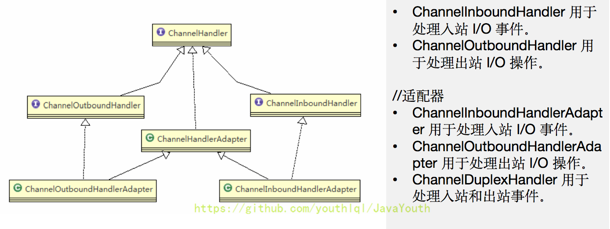
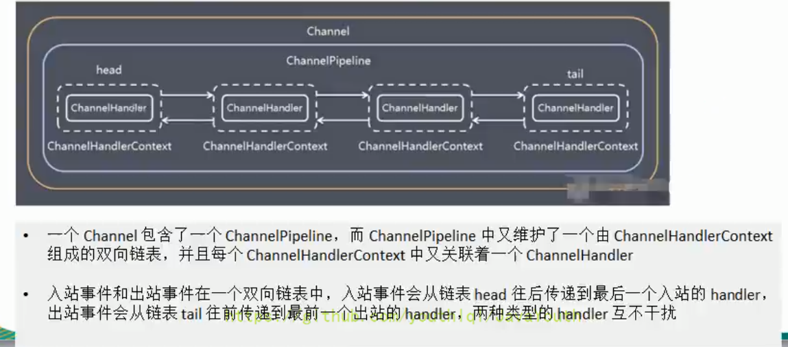

<!DOCTYPE html>


<html lang="zh-Hans">
  

    <head>
      <meta charset="utf-8" />
        
      <meta name="description" content="Technical output and problem solving record" />
      
      <meta
        name="viewport"
        content="width=device-width, initial-scale=1, maximum-scale=1"
      />
      <title>Java IO编程04-Netty核心模块组件 |  Tunan`s Blog</title>
  <meta name="generator" content="hexo-theme-ayer">
      
      <link rel="shortcut icon" href="/favicon.ico" />
       
<link rel="stylesheet" href="/dist/main.css">

      <link
        rel="stylesheet"
        href="https://cdn.jsdelivr.net/gh/Shen-Yu/cdn/css/remixicon.min.css"
      />
      
<link rel="stylesheet" href="/css/custom.css">
 
      <script src="https://cdn.jsdelivr.net/npm/pace-js@1.0.2/pace.min.js"></script>
       
 

      <link
        rel="stylesheet"
        href="https://cdn.jsdelivr.net/npm/@sweetalert2/theme-bulma@5.0.1/bulma.min.css"
      />
      <script src="https://cdn.jsdelivr.net/npm/sweetalert2@11.0.19/dist/sweetalert2.min.js"></script>

      <!-- mermaid -->
      
      <style>
        .swal2-styled.swal2-confirm {
          font-size: 1.6rem;
        }
      </style>
    </head>
  </html>
</html>


<body>
  <div id="app">
    
      
    <main class="content on">
      <section class="outer">
  <article
  id="post-Netty-03"
  class="article article-type-post"
  itemscope
  itemprop="blogPost"
  data-scroll-reveal
>
  <div class="article-inner">
    
    <header class="article-header">
       
<h1 class="article-title sea-center" style="border-left:0" itemprop="name">
  Java IO编程04-Netty核心模块组件
</h1>
 

      
    </header>
     
    <div class="article-meta">
      <a href="/2022/02/17/Netty-03/" class="article-date">
  <time datetime="2022-02-17T07:38:45.000Z" itemprop="datePublished">2022-02-17</time>
</a> 
  <div class="article-category">
    <a class="article-category-link" href="/categories/IO/">IO</a>
  </div>
  
<div class="word_count">
    <span class="post-time">
        <span class="post-meta-item-icon">
            <i class="ri-quill-pen-line"></i>
            <span class="post-meta-item-text"> Word count:</span>
            <span class="post-count">1.7k</span>
        </span>
    </span>

    <span class="post-time">
        &nbsp; | &nbsp;
        <span class="post-meta-item-icon">
            <i class="ri-book-open-line"></i>
            <span class="post-meta-item-text"> Reading time≈</span>
            <span class="post-count">6 min</span>
        </span>
    </span>
</div>
 
    </div>
      
    <div class="tocbot"></div>


  
    <div class="article-entry" itemprop="articleBody">
       
  <h1 id="Netty核心模块组件"><a href="#Netty核心模块组件" class="headerlink" title="Netty核心模块组件"></a>Netty核心模块组件</h1><h2 id="1、Bootstrap、ServerBootstrap"><a href="#1、Bootstrap、ServerBootstrap" class="headerlink" title="1、Bootstrap、ServerBootstrap"></a>1、Bootstrap、ServerBootstrap</h2><ol>
<li><code>Bootstrap</code> 意思是引导，一个 <code>Netty</code> 应用通常由一个 <code>Bootstrap</code> 开始，主要作用是配置整个 <code>Netty</code> 程序，串联各个组件，<code>Netty</code> 中 <code>Bootstrap</code> 类是客户端程序的启动引导类，<code>ServerBootstrap</code> 是服务端启动引导类。<span id="more"></span></li>
<li>常见的方法有<ul>
<li><code>public ServerBootstrap group(EventLoopGroup parentGroup, EventLoopGroup childGroup)</code>，该方法用于服务器端，用来设置两个 <code>EventLoop</code></li>
<li><code>public B group(EventLoopGroup group)</code>，该方法用于客户端，用来设置一个 <code>EventLoop</code></li>
<li><code>public B channel(Class&lt;? extends C&gt; channelClass)</code>，该方法用来设置一个服务器端的通道实现</li>
<li><code>public &lt;T&gt; B option(ChannelOption&lt;T&gt; option, T value)</code>，用来给 <code>ServerChannel</code> 添加配置</li>
<li><code>public &lt;T&gt; ServerBootstrap childOption(ChannelOption&lt;T&gt; childOption, T value)</code>，用来给接收到的通道添加配置</li>
<li><code>public ServerBootstrap childHandler(ChannelHandler childHandler)</code>，该方法用来设置业务处理类（自定义的<code>handler</code>）</li>
<li><code>public ChannelFuture bind(int inetPort)</code>，该方法用于服务器端，用来设置占用的端口号</li>
<li><code>public ChannelFuture connect(String inetHost, int inetPort)</code>，该方法用于客户端，用来连接服务器端</li>
</ul>
</li>
</ol>
<h2 id="2、Future、ChannelFuture"><a href="#2、Future、ChannelFuture" class="headerlink" title="2、Future、ChannelFuture"></a>2、Future、ChannelFuture</h2><p><code>Netty</code> 中所有的 <code>IO</code> 操作都是异步的，不能立刻得知消息是否被正确处理。但是可以过一会等它执行完成或者直接注册一个监听，具体的实现就是通过 <code>Future</code> 和 <code>ChannelFutures</code>，他们可以注册一个监听，当操作执行成功或失败时监听会自动触发注册的监听事件</p>
<p>常见的方法有</p>
<ul>
<li><code>Channel channel()</code>，返回当前正在进行 <code>IO</code> 操作的通道</li>
<li><code>ChannelFuture sync()</code>，等待异步操作执行完毕</li>
</ul>
<h2 id="3、Channel"><a href="#3、Channel" class="headerlink" title="3、Channel"></a>3、Channel</h2><ol>
<li><code>Netty</code> 网络通信的组件，能够用于执行网络 <code>I/O</code> 操作。</li>
<li>通过 <code>Channel</code> 可获得当前网络连接的通道的状态</li>
<li>通过 <code>Channel</code> 可获得网络连接的配置参数（例如接收缓冲区大小）</li>
<li><code>Channel</code> 提供异步的网络 <code>I/O</code> 操作(如建立连接，读写，绑定端口)，异步调用意味着任何 <code>I/O</code> 调用都将立即返回，并且不保证在调用结束时所请求的 <code>I/O</code> 操作已完成</li>
<li>调用立即返回一个 <code>ChannelFuture</code> 实例，通过注册监听器到 <code>ChannelFuture</code> 上，可以 <code>I/O</code> 操作成功、失败或取消时回调通知调用方</li>
<li>支持关联 <code>I/O</code> 操作与对应的处理程序</li>
<li>不同协议、不同的阻塞类型的连接都有不同的<code>Channel</code>类型与之对应，常用的<code>Channel</code>类型：<ul>
<li><code>NioSocketChannel</code>，异步的客户端 <code>TCP</code> <code>Socket</code> 连接。</li>
<li><code>NioServerSocketChannel</code>，异步的服务器端 <code>TCP</code> <code>Socket</code> 连接。</li>
<li><code>NioDatagramChannel</code>，异步的 <code>UDP</code> 连接。</li>
<li><code>NioSctpChannel</code>，异步的客户端 <code>Sctp</code> 连接。</li>
<li><code>NioSctpServerChannel</code>，异步的 <code>Sctp</code> 服务器端连接，这些通道涵盖了 <code>UDP</code> 和 <code>TCP</code> 网络 <code>IO</code> 以及文件 <code>IO</code>。</li>
</ul>
</li>
</ol>
<h2 id="4、Selector"><a href="#4、Selector" class="headerlink" title="4、Selector"></a>4、Selector</h2><ol>
<li><code>Netty</code> 基于 <code>Selector</code> 对象实现 <code>I/O</code> 多路复用，通过 <code>Selector</code> 一个线程可以监听多个连接的 <code>Channel</code> 事件。</li>
<li>当向一个 <code>Selector</code> 中注册 <code>Channel</code> 后，<code>Selector</code> 内部的机制就可以自动不断地查询（<code>Select</code>）这些注册的 <code>Channel</code> 是否有已就绪的 <code>I/O</code> 事件（例如可读，可写，网络连接完成等），这样程序就可以很简单地使用一个线程高效地管理多个 <code>Channel</code></li>
</ol>
<h2 id="5、ChannelHandler-及其实现类"><a href="#5、ChannelHandler-及其实现类" class="headerlink" title="5、ChannelHandler 及其实现类"></a>5、ChannelHandler 及其实现类</h2><ol>
<li><code>ChannelHandler</code> 是一个接口，处理 <code>I/O</code> 事件或拦截 <code>I/O</code> 操作，并将其转发到其 <code>ChannelPipeline</code>（业务处理链）中的下一个处理程序。</li>
<li><code>ChannelHandler</code> 本身并没有提供很多方法，因为这个接口有许多的方法需要实现，方便使用期间，可以继承它的子类</li>
<li><code>ChannelHandler</code> 及其实现类一览图</li>
</ol>
<p></p>
<ol start="4">
<li>我们经常需要自定义一个 <code>Handler</code> 类去继承 <code>ChannelInboundHandlerAdapter</code>，然后通过重写相应方法实现业务逻辑，我们接下来看看一般都需要重写哪些方法</li>
</ol>
<p></p>
<h2 id="6、Pipeline-和-ChannelPipeline"><a href="#6、Pipeline-和-ChannelPipeline" class="headerlink" title="6、Pipeline 和 ChannelPipeline"></a>6、Pipeline 和 ChannelPipeline</h2><p><code>ChannelPipeline</code> 是一个重点：</p>
<ol>
<li><code>ChannelPipeline</code> 是一个 <code>Handler</code> 的集合，它负责处理和拦截 <code>inbound</code> 或者 <code>outbound</code> 的事件和操作，相当于一个贯穿 <code>Netty</code> 的链。（也可以这样理解：<code>ChannelPipeline</code> 是保存 <code>ChannelHandler</code> 的 <code>List</code>，用于处理或拦截 <code>Channel</code> 的入站事件和出站操作）</li>
<li><code>ChannelPipeline</code> 实现了一种高级形式的拦截过滤器模式，使用户可以完全控制事件的处理方式，以及 <code>Channel</code> 中各个的 <code>ChannelHandler</code> 如何相互交互</li>
<li>在 <code>Netty</code> 中每个 <code>Channel</code> 都有且仅有一个 <code>ChannelPipeline</code> 与之对应，它们的组成关系如下</li>
</ol>
<p></p>
<ol start="4">
<li>常用方法<ol>
<li><code>ChannelPipeline addFirst(ChannelHandler... handlers)</code>，把一个业务处理类（<code>handler</code>）添加到链中的第一个位置</li>
<li><code>ChannelPipeline addLast(ChannelHandler... handlers)</code>，把一个业务处理类（<code>handler</code>）添加到链中的最后一个位置</li>
</ol>
</li>
</ol>
<h2 id="7、ChannelHandlerContext"><a href="#7、ChannelHandlerContext" class="headerlink" title="7、ChannelHandlerContext"></a>7、ChannelHandlerContext</h2><ol>
<li><p>保存 <code>Channel</code> 相关的所有上下文信息，同时关联一个 <code>ChannelHandler</code> 对象</p>
</li>
<li><p>即 <code>ChannelHandlerContext</code> 中包含一个具体的事件处理器 <code>ChannelHandler</code>，同时 <code>ChannelHandlerContext</code> 中也绑定了对应的 <code>pipeline</code> 和 <code>Channel</code> 的信息，方便对 <code>ChannelHandler</code> 进行调用。</p>
</li>
<li><p>常用方法</p>
<ul>
<li><p><code>ChannelFuture close()</code>，关闭通道</p>
</li>
<li><p><code>ChannelOutboundInvoker flush()</code>，刷新</p>
</li>
<li><p><code>ChannelFuture writeAndFlush(Object msg)</code>，将数据写到<code>ChannelPipeline</code> 中当前 <code>ChannelHandler</code> 的下一个 <code>ChannelHandler</code> 开始处理（出站）</p>
</li>
</ul>
</li>
</ol>
<h2 id="8、ChannelOption"><a href="#8、ChannelOption" class="headerlink" title="8、ChannelOption"></a>8、ChannelOption</h2><ol>
<li><code>Netty</code> 在创建 <code>Channel</code> 实例后，一般都需要设置 <code>ChannelOption</code> 参数。</li>
<li><code>ChannelOption</code> 参数如下：</li>
</ol>
<p></p>
<h2 id="9、EventLoopGroup-和其实现类-NioEventLoopGroup"><a href="#9、EventLoopGroup-和其实现类-NioEventLoopGroup" class="headerlink" title="9、EventLoopGroup 和其实现类 NioEventLoopGroup"></a>9、EventLoopGroup 和其实现类 NioEventLoopGroup</h2><ol>
<li><code>EventLoopGroup</code> 是一组 <code>EventLoop</code> 的抽象，<code>Netty</code> 为了更好的利用多核 <code>CPU</code> 资源，一般会有多个 <code>EventLoop</code> 同时工作，每个 <code>EventLoop</code> 维护着一个 <code>Selector</code> 实例。</li>
<li><code>EventLoopGroup</code> 提供 <code>next</code> 接口，可以从组里面按照一定规则获取其中一个 <code>EventLoop</code> 来处理任务。在 <code>Netty</code> 服务器端编程中，我们一般都需要提供两个 <code>EventLoopGroup</code>，例如：<code>BossEventLoopGroup</code> 和 <code>WorkerEventLoopGroup</code>。</li>
<li>通常一个服务端口即一个 <code>ServerSocketChannel</code> 对应一个 <code>Selector</code> 和一个 <code>EventLoop</code> 线程。<code>BossEventLoop</code> 负责接收客户端的连接并将 <code>SocketChannel</code> 交给 <code>WorkerEventLoopGroup</code> 来进行 <code>IO</code> 处理，如下图所示</li>
</ol>
<p></p>
<ol start="4">
<li>常用方法<br><code>public NioEventLoopGroup()</code>，构造方法<br><code>public Future&lt;?&gt; shutdownGracefully()</code>，断开连接，关闭线程</li>
</ol>
<h2 id="10、Unpooled-类"><a href="#10、Unpooled-类" class="headerlink" title="10、Unpooled 类"></a>10、Unpooled 类</h2><ol>
<li><code>Netty</code> 提供一个专门用来操作缓冲区（即 <code>Netty</code> 的数据容器）的工具类</li>
<li>常用方法如下所示</li>
</ol>
<p></p>
<pre><code class="java">package com.atguigu.netty.buf;

import io.netty.buffer.ByteBuf;
import io.netty.buffer.Unpooled;

public class NettyByteBuf01 &#123;

    public static void main(String[] args) &#123;
        
        //创建一个ByteBuf
        //说明
        //1. 创建 对象，该对象包含一个数组arr , 是一个byte[10]
        //2. 在netty 的buffer中，不需要使用flip 进行反转
        //   底层维护了 readerindex 和 writerIndex
        //3. 通过 readerindex 和  writerIndex 和  capacity， 将buffer分成三个区域
        // 0---readerindex 已经读取的区域
        // readerindex---writerIndex ， 可读的区域
        // writerIndex -- capacity, 可写的区域
        ByteBuf buffer = Unpooled.buffer(10);

        for (int i = 0; i &lt; 10; i++) &#123;
            buffer.writeByte(i);
        &#125;

        System.out.println(&quot;capacity=&quot; + buffer.capacity());//10
        //输出
//        for(int i = 0; i&lt;buffer.capacity(); i++) &#123;
              //这个方法readerindex不会变
//            System.out.println(buffer.getByte(i));
//        &#125;
        for (int i = 0; i &lt; buffer.capacity(); i++) &#123;
            //这个方法readerindex会变
            System.out.println(buffer.readByte());
        &#125;
        System.out.println(&quot;执行完毕&quot;);
    &#125;
&#125;
</code></pre>
 
      <!-- reward -->
      
    </div>
    

    <!-- copyright -->
    
    <div class="declare">
      <ul class="post-copyright">
        <li>
          <i class="ri-copyright-line"></i>
          <strong>Copyright： </strong>
          
          Copyright is owned by the author. For commercial reprints, please contact the author for authorization. For non-commercial reprints, please indicate the source.
          
        </li>
      </ul>
    </div>
    
    <footer class="article-footer">
       
<div class="share-btn">
      <span class="share-sns share-outer">
        <i class="ri-share-forward-line"></i>
        分享
      </span>
      <div class="share-wrap">
        <i class="arrow"></i>
        <div class="share-icons">
          
          <a class="weibo share-sns" href="javascript:;" data-type="weibo">
            <i class="ri-weibo-fill"></i>
          </a>
          <a class="weixin share-sns wxFab" href="javascript:;" data-type="weixin">
            <i class="ri-wechat-fill"></i>
          </a>
          <a class="qq share-sns" href="javascript:;" data-type="qq">
            <i class="ri-qq-fill"></i>
          </a>
          <a class="douban share-sns" href="javascript:;" data-type="douban">
            <i class="ri-douban-line"></i>
          </a>
          <!-- <a class="qzone share-sns" href="javascript:;" data-type="qzone">
            <i class="icon icon-qzone"></i>
          </a> -->
          
          <a class="facebook share-sns" href="javascript:;" data-type="facebook">
            <i class="ri-facebook-circle-fill"></i>
          </a>
          <a class="twitter share-sns" href="javascript:;" data-type="twitter">
            <i class="ri-twitter-fill"></i>
          </a>
          <a class="google share-sns" href="javascript:;" data-type="google">
            <i class="ri-google-fill"></i>
          </a>
        </div>
      </div>
</div>

<div class="wx-share-modal">
    <a class="modal-close" href="javascript:;"><i class="ri-close-circle-line"></i></a>
    <p>扫一扫，分享到微信</p>
    <div class="wx-qrcode">
      
    </div>
</div>

<div id="share-mask"></div>  
  <ul class="article-tag-list" itemprop="keywords"><li class="article-tag-list-item"><a class="article-tag-list-link" href="/tags/Netty/" rel="tag">Netty</a></li></ul>

    </footer>
  </div>

   
  <nav class="article-nav">
    
      <a href="/2022/03/30/Java-%E5%A4%9A%E7%BA%BF%E7%A8%8B%E8%AF%A6%E8%A7%A3/" class="article-nav-link">
        <strong class="article-nav-caption">上一篇</strong>
        <div class="article-nav-title">
          
            Java 多线程详解
          
        </div>
      </a>
    
    
      <a href="/2022/02/04/Netty-02/" class="article-nav-link">
        <strong class="article-nav-caption">下一篇</strong>
        <div class="article-nav-title">Java IO编程03-Netty高性能架构</div>
      </a>
    
  </nav>

   
<!-- valine评论 -->
<div id="vcomments-box">
  <div id="vcomments"></div>
</div>
<script src="//cdn1.lncld.net/static/js/3.0.4/av-min.js"></script>
<script src="https://cdn.jsdelivr.net/npm/valine@1.4.14/dist/Valine.min.js"></script>
<script>
  new Valine({
    el: "#vcomments",
    app_id: "",
    app_key: "",
    path: window.location.pathname,
    avatar: "monsterid",
    placeholder: "给我的文章加点评论吧~",
    recordIP: true,
  });
  const infoEle = document.querySelector("#vcomments .info");
  if (infoEle && infoEle.childNodes && infoEle.childNodes.length > 0) {
    infoEle.childNodes.forEach(function (item) {
      item.parentNode.removeChild(item);
    });
  }
</script>
<style>
  #vcomments-box {
    padding: 5px 30px;
  }

  @media screen and (max-width: 800px) {
    #vcomments-box {
      padding: 5px 0px;
    }
  }

  #vcomments-box #vcomments {
    background-color: #fff;
  }

  .v .vlist .vcard .vh {
    padding-right: 20px;
  }

  .v .vlist .vcard {
    padding-left: 10px;
  }
</style>

 
   
     
</article>

</section>
      <footer class="footer">
  <div class="outer">
    <ul>
      <li>
        Copyrights &copy;
        2018-2022
        <i class="ri-heart-fill heart_icon"></i> Tunan
      </li>
    </ul>
    <ul>
      <li>
        
      </li>
    </ul>
    <ul>
      <li>
        
        
        <span>
  <span><i class="ri-user-3-fill"></i>Visitors:<span id="busuanzi_value_site_uv"></span></span>
  <span class="division">|</span>
  <span><i class="ri-eye-fill"></i>Views:<span id="busuanzi_value_page_pv"></span></span>
</span>
        
      </li>
    </ul>
    <ul>
      
    </ul>
    <ul>
      
    </ul>
    <ul>
      <li>
        <!-- cnzz统计 -->
        
        <script type="text/javascript" src='https://s9.cnzz.com/z_stat.php?id=1278069914&amp;web_id=1278069914'></script>
        
      </li>
    </ul>
  </div>
</footer>    
    </main>
    <div class="float_btns">
      <div class="totop" id="totop">
  <i class="ri-arrow-up-line"></i>
</div>

<div class="todark" id="todark">
  <i class="ri-moon-line"></i>
</div>

    </div>
    <aside class="sidebar on">
      <button class="navbar-toggle"></button>
<nav class="navbar">
  
  <div class="logo">
    <a href="/"></a>
  </div>
  
  <ul class="nav nav-main">
    
    <li class="nav-item">
      <a class="nav-item-link" href="/">主页</a>
    </li>
    
    <li class="nav-item">
      <a class="nav-item-link" href="/archives">归档</a>
    </li>
    
    <li class="nav-item">
      <a class="nav-item-link" href="/categories">分类</a>
    </li>
    
    <li class="nav-item">
      <a class="nav-item-link" href="/tags">标签</a>
    </li>
    
    <li class="nav-item">
      <a class="nav-item-link" href="/tags/share">分享</a>
    </li>
    
    <li class="nav-item">
      <a class="nav-item-link" target="_blank" rel="noopener" href="https://blog.csdn.net/North_City_">CSDN</a>
    </li>
    
  </ul>
</nav>
<nav class="navbar navbar-bottom">
  <ul class="nav">
    <li class="nav-item">
      
      <a class="nav-item-link nav-item-search"  title="Search">
        <i class="ri-search-line"></i>
      </a>
      
      
      <a class="nav-item-link" target="_blank" href="/atom.xml" title="RSS Feed">
        <i class="ri-rss-line"></i>
      </a>
      
    </li>
  </ul>
</nav>
<div class="search-form-wrap">
  <div class="local-search local-search-plugin">
  <input type="search" id="local-search-input" class="local-search-input" placeholder="Search...">
  <div id="local-search-result" class="local-search-result"></div>
</div>
</div>
    </aside>
    <div id="mask"></div>

<!-- #reward -->
<div id="reward">
  <span class="close"><i class="ri-close-line"></i></span>
  <p class="reward-p"><i class="ri-cup-line"></i>请我喝杯咖啡吧~</p>
  <div class="reward-box">
    
    <div class="reward-item">
      
      <span class="reward-type">支付宝</span>
    </div>
    
    
    <div class="reward-item">
      
      <span class="reward-type">微信</span>
    </div>
    
  </div>
</div>
    
<script src="/js/jquery-3.6.0.min.js"></script>
 
<script src="/js/lazyload.min.js"></script>

<!-- Tocbot -->
 
<script src="/js/tocbot.min.js"></script>

<script>
  tocbot.init({
    tocSelector: ".tocbot",
    contentSelector: ".article-entry",
    headingSelector: "h1, h2, h3, h4, h5, h6",
    hasInnerContainers: true,
    scrollSmooth: true,
    scrollContainer: "main",
    positionFixedSelector: ".tocbot",
    positionFixedClass: "is-position-fixed",
    fixedSidebarOffset: "auto",
  });
</script>

<script src="https://cdn.jsdelivr.net/npm/jquery-modal@0.9.2/jquery.modal.min.js"></script>
<link
  rel="stylesheet"
  href="https://cdn.jsdelivr.net/npm/jquery-modal@0.9.2/jquery.modal.min.css"
/>
<script src="https://cdn.jsdelivr.net/npm/justifiedGallery@3.7.0/dist/js/jquery.justifiedGallery.min.js"></script>

<script src="/dist/main.js"></script>

<!-- ImageViewer -->
 <!-- Root element of PhotoSwipe. Must have class pswp. -->
<div class="pswp" tabindex="-1" role="dialog" aria-hidden="true">

    <!-- Background of PhotoSwipe. 
         It's a separate element as animating opacity is faster than rgba(). -->
    <div class="pswp__bg"></div>

    <!-- Slides wrapper with overflow:hidden. -->
    <div class="pswp__scroll-wrap">

        <!-- Container that holds slides. 
            PhotoSwipe keeps only 3 of them in the DOM to save memory.
            Don't modify these 3 pswp__item elements, data is added later on. -->
        <div class="pswp__container">
            <div class="pswp__item"></div>
            <div class="pswp__item"></div>
            <div class="pswp__item"></div>
        </div>

        <!-- Default (PhotoSwipeUI_Default) interface on top of sliding area. Can be changed. -->
        <div class="pswp__ui pswp__ui--hidden">

            <div class="pswp__top-bar">

                <!--  Controls are self-explanatory. Order can be changed. -->

                <div class="pswp__counter"></div>

                <button class="pswp__button pswp__button--close" title="Close (Esc)"></button>

                <button class="pswp__button pswp__button--share" style="display:none" title="Share"></button>

                <button class="pswp__button pswp__button--fs" title="Toggle fullscreen"></button>

                <button class="pswp__button pswp__button--zoom" title="Zoom in/out"></button>

                <!-- Preloader demo http://codepen.io/dimsemenov/pen/yyBWoR -->
                <!-- element will get class pswp__preloader--active when preloader is running -->
                <div class="pswp__preloader">
                    <div class="pswp__preloader__icn">
                        <div class="pswp__preloader__cut">
                            <div class="pswp__preloader__donut"></div>
                        </div>
                    </div>
                </div>
            </div>

            <div class="pswp__share-modal pswp__share-modal--hidden pswp__single-tap">
                <div class="pswp__share-tooltip"></div>
            </div>

            <button class="pswp__button pswp__button--arrow--left" title="Previous (arrow left)">
            </button>

            <button class="pswp__button pswp__button--arrow--right" title="Next (arrow right)">
            </button>

            <div class="pswp__caption">
                <div class="pswp__caption__center"></div>
            </div>

        </div>

    </div>

</div>

<link rel="stylesheet" href="https://cdn.jsdelivr.net/npm/photoswipe@4.1.3/dist/photoswipe.min.css">
<link rel="stylesheet" href="https://cdn.jsdelivr.net/npm/photoswipe@4.1.3/dist/default-skin/default-skin.min.css">
<script src="https://cdn.jsdelivr.net/npm/photoswipe@4.1.3/dist/photoswipe.min.js"></script>
<script src="https://cdn.jsdelivr.net/npm/photoswipe@4.1.3/dist/photoswipe-ui-default.min.js"></script>

<script>
    function viewer_init() {
        let pswpElement = document.querySelectorAll('.pswp')[0];
        let $imgArr = document.querySelectorAll(('.article-entry img:not(.reward-img)'))

        $imgArr.forEach(($em, i) => {
            $em.onclick = () => {
                // slider展开状态
                // todo: 这样不好，后面改成状态
                if (document.querySelector('.left-col.show')) return
                let items = []
                $imgArr.forEach(($em2, i2) => {
                    let img = $em2.getAttribute('data-idx', i2)
                    let src = $em2.getAttribute('data-target') || $em2.getAttribute('src')
                    let title = $em2.getAttribute('alt')
                    // 获得原图尺寸
                    const image = new Image()
                    image.src = src
                    items.push({
                        src: src,
                        w: image.width || $em2.width,
                        h: image.height || $em2.height,
                        title: title
                    })
                })
                var gallery = new PhotoSwipe(pswpElement, PhotoSwipeUI_Default, items, {
                    index: parseInt(i)
                });
                gallery.init()
            }
        })
    }
    viewer_init()
</script> 
<!-- MathJax -->

<!-- Katex -->

<!-- busuanzi  -->
 
<script src="/js/busuanzi-2.3.pure.min.js"></script>
 
<!-- ClickLove -->

<!-- ClickBoom1 -->

<!-- ClickBoom2 -->

<!-- CodeCopy -->
 
<link rel="stylesheet" href="/css/clipboard.css">
 <script src="https://cdn.jsdelivr.net/npm/clipboard@2/dist/clipboard.min.js"></script>
<script>
  function wait(callback, seconds) {
    var timelag = null;
    timelag = window.setTimeout(callback, seconds);
  }
  !function (e, t, a) {
    var initCopyCode = function(){
      var copyHtml = '';
      copyHtml += '<button class="btn-copy" data-clipboard-snippet="">';
      copyHtml += '<i class="ri-file-copy-2-line"></i><span>COPY</span>';
      copyHtml += '</button>';
      $(".highlight .code pre").before(copyHtml);
      $(".article pre code").before(copyHtml);
      var clipboard = new ClipboardJS('.btn-copy', {
        target: function(trigger) {
          return trigger.nextElementSibling;
        }
      });
      clipboard.on('success', function(e) {
        let $btn = $(e.trigger);
        $btn.addClass('copied');
        let $icon = $($btn.find('i'));
        $icon.removeClass('ri-file-copy-2-line');
        $icon.addClass('ri-checkbox-circle-line');
        let $span = $($btn.find('span'));
        $span[0].innerText = 'COPIED';
        
        wait(function () { // 等待两秒钟后恢复
          $icon.removeClass('ri-checkbox-circle-line');
          $icon.addClass('ri-file-copy-2-line');
          $span[0].innerText = 'COPY';
        }, 2000);
      });
      clipboard.on('error', function(e) {
        e.clearSelection();
        let $btn = $(e.trigger);
        $btn.addClass('copy-failed');
        let $icon = $($btn.find('i'));
        $icon.removeClass('ri-file-copy-2-line');
        $icon.addClass('ri-time-line');
        let $span = $($btn.find('span'));
        $span[0].innerText = 'COPY FAILED';
        
        wait(function () { // 等待两秒钟后恢复
          $icon.removeClass('ri-time-line');
          $icon.addClass('ri-file-copy-2-line');
          $span[0].innerText = 'COPY';
        }, 2000);
      });
    }
    initCopyCode();
  }(window, document);
</script>
 
<!-- CanvasBackground -->

<script>
  if (window.mermaid) {
    mermaid.initialize({ theme: "forest" });
  }
</script>


    
    

  </div>
</body>

</html>